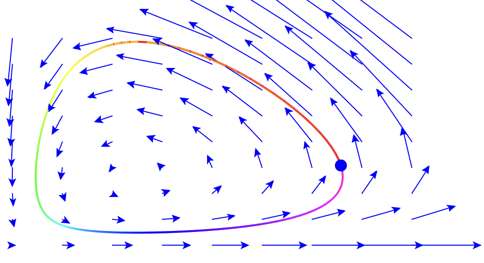
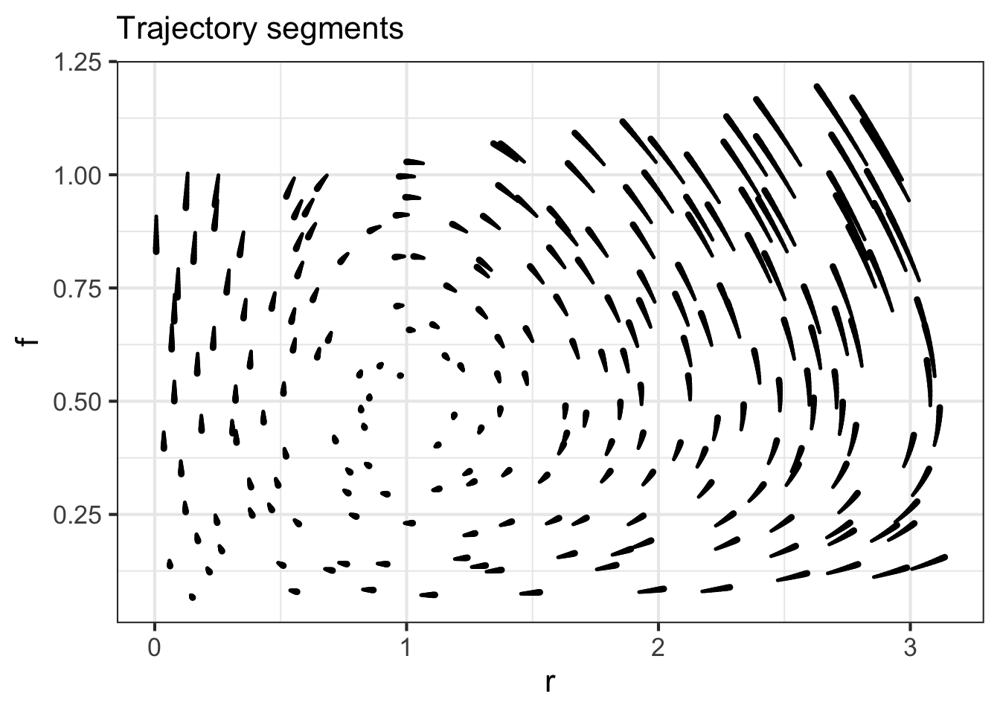
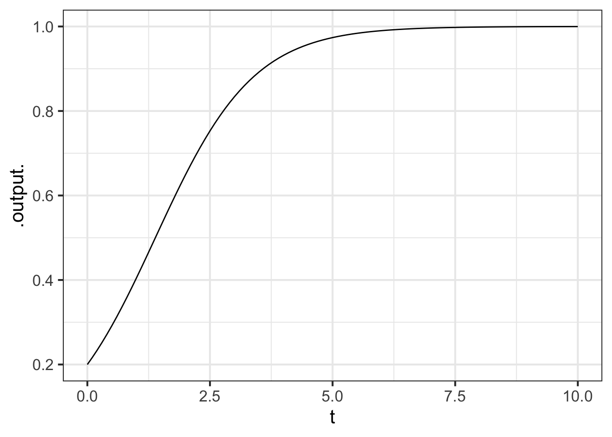

41 Finding a “solution”
As you saw in the previous chapter, each differential equation in a dynamical system relates the derivative of a function to the function itself. For instance, in \[\partial_t x = x\,(1-x)\] left-hand side of the equation involves the function \(x(t)\). The equation dictates that whatever \(x(t)\) might be, it has to be such that \(\partial_t x(t)\) is exactly equal to the function \(x(t)\,\left(\strut 1- x(t)\right)\) Solving a differential equation is the phrase used for finding such self-consistent functions. This chapter is about techniques for finding solutions.
In high-school mathematics, many algebraic problems were of the form, “Solve for \(x\).” In such problems, the answer you got was all you were looking for: the complete answer to the problem.
Having been exposed to this style in high school, you may have come to think of “finding a solution” as the only task to perform in working on a problem.
In working with dynamical systems, “finding a solution” is one of the several tasks, among others, that you might need to perform to serve the purpose of your modeling effort. But not every modeling purpose requires “finding a solution,” that is, finding the function \(x(t)\). For instance, the goal of working with a dynamical system is often to sort out other properties of the system, such as the existence, location, and stability of fixed points. (we will introduce fixed points in sec-flow-on-line.)
Given what you learned in studying Block 3 of this book, you likely will be tempted to approach the task of “finding a solution” by applying symbolic anti-differentiation techniques to the problem. After all, each differential equation in a dynamical system involves a function \(\partial_t x(t)\). To find \(x(t)\) from \(\partial_t x(t)\) seems like a matter of applying the “fundamental theorem of calculus,” namely
\[\int \partial_t x(t) dt = x(t)\ .\] Following this logic, we would translate the equation to \[x(t) = \int x(t)\, (1-x(t))dt\ .\] But the problems in Block 3 were all of the form \(\frac{d\color{magenta}{x}}{d\color{blue}{t}} = g(\color{blue}{t})\), whereas the problems we work with in this Block are generally of the entirely different form \(\frac{d\color{magenta}{x}}{d\color{blue}{t}} = g(\color{magenta}{x})\). Thus, we will usually need special techniques suited to the format of dynamical systems.
Admittedly, in mathematics it is common to refer to integrating a differential equation, but this should be broadly understood as accumulating the increments \(\partial_t x(t)\) starting at some initial condition \(x(t_0)\), even if that accumulation is not carried out by symbolic anti-differentiation.
In this chapter we will introduce three different techniques to accumulating a solution to a differential equation or a pair of such equations. First, we will look again at the graphical method of “following the flow” in a plot of the flow field. This technique is mainly of use for developing intuition about the dynamics.
Second, we will develop a simple Euler method for accumulating a solution. Third, we will explore how to take a guess about the solution and, when the guess is good enough, refine that into an actual solution. This is called the method of ansätze.
Third, and briefly, we will look at some of the situations where symbolic anti-differentiation can be used. This includes a very brief introduction to substitution methods.
A differential equation like \[\partial_t x(t) = x(t)\,(1-x(t))\] is very busy typographically. One reason is the repeated \((t)\) which play no role other than to state explicitly that \(x\) is a function of \(t\). A convenient shorthand simply replaces \(x(t)\) to make the “is a function of \(t\)” implicit. The shorthand form of the equation appears as \[\partial_t x = x (1-x)\ .\] it is the reader’s responsibility, knowing that she is working with a differential equation, to remember that \(x\) is a function of \(t\).
In many texts and research papers, differential equations are written using Leibniz’s notation, like this: \[\frac{dx}{dt} = x (1-x)\ .\] This is exactly equivalent to our notation \(\partial_t x\).
An even more concise notation, originated by Isaac Newton, is to replace the \(\partial_t\) with a simple dot over the function being differentiated as in \(\Large\dot{x}\). With this notation the equation looks like \[\dot{x} = x (1-x)\ ,\] about as simple as it gets.
This dot notation is even more expressive when working with second-order differential equations involving second derivative. In the dot notation, \(\partial_{tt} x\) is written \(\ddot{x}\). Dot notation is also in wide use. Again, it is exactly equivalent to our \(\partial_t x\).
41.1 The flow field
With a pair of differential equations, as with the pendulum or the rabbit-fox model, each equation gives one component of the change in state. To draw the flow at single point in state space, evaluate the dynamical functions at that point. Each dynamical function contributes, as its output, one of the components of the state velocity vector. If the parameters in the model have been assigned numerical values, the result of evaluating the right-hand sides will be two numbers.
A case in point is the rabbit-fox system. The axes in the rabbit-fox state space are denominated in units of rabbit density \(r\) and fox density \(f\). The differential equations are \[\begin{eqnarray} \partial_t r & = & 0.66 r - 1.33 r f\\ \partial_t f & = & -f + rf\\ \end{eqnarray}\]
To to find the state velocity at, say, \(r=2, f=1/4\), plug those values into the right-hand side:
\(\partial_t r = 1.33 - 0.66 = 0.66\ \ \ \)rabbit density per month
\(\partial_t f = -0.25 + 0.5 = 0.25\ \ \ \)fox density per month.
Once you know the numerical vector value of the state velocity, you need to convert it to a form suitable for plotting in the state space. The conversion is needed because the state space is denominated in rabbit density and fox density, not in rabbit density per month or fox density per month. The conversion is accomplished by multiplying the state velocity vector by a small \(dt\), say, 0.1 months.
The conversion produces a vector whose components are denominated in the same way as the state space and thus can be plotted meaningfully in the state space.
To illustrate, let’s draw a flow vector for the state space coordinate \((r=2, f = 1/4)\). Above, we already calculated the components of the state velocity vector;Given the value \(\partial_t f = 0.25\) and \(\partial_t f = 0.66\). For the sake of illustration, we will set \(dt = 0.1\) month. Consequently, the vector to be plotted will be \((0.25, 0.66) dt = (0.025, 0.066)\)$ with units of rabbit density and fox density respectively. the right. This flow arrow is drawn in Figure fig-rf-flow-arrow.
To draw the entire flow field, repeat this process at many other points in the state space as in Figure fig-rf-flow-field.


Some people prefer a visualization of short segments of actual trajectories, as in the right panel in Figure fig-rf-flow-field, rather than the state velocity vector. This is a matter of personal preference.
With the flow field depicted in sufficient detail, you can now trace out trajectory.
To trace out a trajectory, select a initial condition for the system. Then follow the flow, taking only a small step in state space. The next step should be in the direction of the flow arrow at the end of the previous step.
The trajectory you draw will be only a sketch, but it can be effective for developing intuition. Figure fig-calcplot3d1 shows a semi-automated version of the go-with-the-flow method. The computer has been used to draw the arrows. When you click in the plot, the computer also undertakes calculation of the trajectory.
Regrettably, from such a sketch of the trajectory, you cannot easily construct \(r(t)\) and \(f(t)\) for time-series plots. Also, you don’t get a sense of how slow or fast the flow is going. Click at different initial conditions in the flow and you will see different trajectories, each of which is a closed loop, the sort of cycles seen in the dice-free Chutes and Ladders game. But the shape of the trajectory does not tell you whether it takes a long time or a short time to complete a loop.
The next section will show you how the computer constructed the trajectory and how we can get information on the speed of the flow.
41.2 Euler method
Recall from Block 2 the limit definition of the derivative: \[\partial_t x(t) = \lim_{dt \rightarrow 0} \frac{x(t + dt) - x(t)}{dt}\ .\] we will use this definition to develop a very general way to solve differential equations: the Euler method.
The differential equations specify the values of \(\partial_t x(t)\) in terms of the dynamical function. In Block 2, we paid attention to whether the limit exists. But here, we know it must because the dynamical functions themselves don’t involve limits. In working with the differential equation it suffices to pick some small, finite \(dt\). How small? Pick \(dt\) to be small enough that the result wouldn’t change in any substantial way if we used an even smaller time increment, say \(dt/10\).
Our starting point for solving each differential equation is to re-write it as a finite difference. To illustrate, we will solve the equation \(\partial_t x = x (1 - x)\), which is often called the logistic equation.
Applying the finite difference definition, we get \[\underbrace{\frac{f(t + dt)- f(t)}{dt}}_{\text{finite-difference approx.}} = \underbrace{x (1-x)}_{\text{dynamical function}}\ .\] Multiplying both sides of the above by \(dt\) and re-arranging terms produces \[\underbrace{f(t + dt)}_{\text{future state}} = \underbrace{f(t)}_{\text{current state}} +\ \ \ \underbrace{x (1-x) dt}_{\text{step}}\] We call this last equation the Euler formula.
To use this, we start at the initial condition, say \(x(t=0) = 0.2\). This initial condition gives us the first row of a tabular representation of the function \(x(t)\):
| time | state |
|---|---|
| 0 | 0.2 |
Next, pick a value for \(dt\) that we will use for all the following steps, each of which will add a new row to the table. For the example, we will set \(dt = 0.1\). When we have constructed the whole table we can go back and check whether that was small enough.
To fill in the next row, we apply the Euler formula. Sine \(dt = 0.1\), the next time step will be \(0.1\). Plug in the current state—which is 0.2 right now—to calculate the future state. The step will be \(0.2 (1-0.2)\, dt = \color{brown}{0.016}\). Add this step to the current state to get the future state. The table now looks like this:
| time | state |
|---|---|
| 0.0 | \(0.2\) |
| 0.1 | \(0.2 + \color{brown}{0.016} = \color{blue}{0.216}\) |
The next step will bring us to time \(0.2\). Use the Euler formula, pluggin in the value of the present state, \(\color{blue}{0.216}\), to find the step. Here that will be \(0.216 (1-0.216)\, dt = \color{magenta}{0.0169.}\). Now the table looks like
| time | state |
|---|---|
| 0.0 | \(0.2\) |
| 0.1 | \(0.2 + \color{brown}{0.016} = \color{blue}{0.216}\) |
| 0.2 | \(\color{blue}{0.216} + \color{magenta}{0.0169} = 0.2329\) |
Add as many rows to the table as you like; the process will be the same.
You will recognize this as an iterative process, as discussed in Chapter 32.
\(\ \)
As is so often the case, it is wise to think about carrying out processes in terms of fundamental tasks accomplished by calculus operations—evaluate, differentiate, anti-differentiate, solve, find argmax, iterate. The obvious choice for integrating differential equations is “anti-differentiate,” but as described previously, the techniques we covered in Block 3 are not sufficient for the task. Instead, we use iteration to solve differential equations.
This example uses the software you have already seen, Iterate(), to carry out the task. In practice, however, you will use a special form of Iterate() called integrateODE() that makes use of interpolation techniques to give a more precise answer.
To implement the iteration to solve \(\partial_t x = x (1-x)\), we need to create a function that takes the current state as input and produces the next state as output. Our one-step function can be this:
next_step <- function(t, x, dt=0.1) {
t <- t + dt
x <- x + x*(1-x)*dt
c(t=t, x=x) # return value
}Notice that we wrote next_step() with an input slot for \(dt\). This will not be part of the state being iterated, just a parameter that allows us easily to explore different values for \(dt\).
Use Iterate() to carry out the iteration of next_step(). Note that we use the fargs argument to Iterate() to pass our selected value for dt to the function next_step(). We will run the iteration for 100 steps. With \(dt=0.1\), those 100 steps will 10 units of time.
Soln <- Iterate(next_step, x0=c(t=0, x=0.2), n=100,
fargs=list(dt=0.1))| n | t | x |
|---|---|---|
| 0 | 0.0 | 0.2000000 |
| 1 | 0.1 | 0.2160000 |
| 2 | 0.2 | 0.2329344 |
| ... 101 rows in total ... | ||
| 99 | 9.9 | 0.9998595 |
| 100 | 10.0 | 0.9998736 |
We can now plot the time series \(x\) vs \(t\):

In the previous example using Iterate() to solve a differential equation, the output of the iteration was a data frame containing values for the solution at discrete times: 0, 0.1, 0.2, and so on. A data table is a perfectly good way to represent a function, but it is handier to have a function in a form that operations like slice_plot() and D() can be applied to. Another way to look at things is that, mathematically, the solution to a differential equation should be a continuous-time function. Fortunately, we have at hand the interpolation techniques covered in Chapter 33 to carry out the construction of a continuous-time function from a tabular representation. The R/mosaic function integrateODE() connects together the iteration and interpolation to provide a solution that is in the form of continuous-time function(s).
Use the R/mosaic function integrateODE() to solve differential equations numerically. It is a specialized function that handles sets of first-order differential equations, but any high-order differential equation can be separated into a set of first-order equations.
To illustrate, this command will solve the differential equation \(\partial_t x = x (1-x)\) that we took on in the previous example with Iterate().
Soln2 <- integrateODE(dx ~ x*(1-x), x = 0.2,
bounds(t=0:10), dt=0.01)
## Solution containing functions x(t).The first argument is a tilde expression, but in a form that is different from from that used in functions such as D() or contour_plot(), etc. To the left of the tilde is a single name composed of the state variable—x here—prefixed by a d. The d is just a reminder that we are describing not x itself, but \(\partial_t\ \mathtt{x}\). On the right of the tilde is the function from the differential equation, in this case, \(x(1-x)\).
The next argument is the initial condition. We are starting the integration at \(x=0.2\). The bounds() sets the time interval for the integration and dt sets the time step..
The output of integrateODE() is an R structure of a type called a “list” that is new to us. The list contains the function(s) created by integrateODE() which you refer to by name (x) using a special form of R punctuation $ suited to lists.. In other words, Soln2$x will be a function, which you can plot like any other function, for instance:
slice_plot(Soln2$x(t) ~ t, bounds(t=0:10))
This use of the R symbol $ is new to us. We won’t emphasize it here. Instead, we’ll use the traj_plot() graphics function (introduced in sec-splines) which already knows how to access the functions created by integrateODE().
traj_plot(x(t) ~ t, Soln2, bounds(t=0:10))
An important feature of integrateODE() is its ability to handle sets of first-order differential equations. For instance, the rabbit/fox system \[\partial_t r = 0.66\, r - 1.33\, r f\\
\partial_t f = -f + rf\] will be integrated by this command:
Eco_soln <- integrateODE(
dr ~ 0.66*r - 1.33*r*f,
df ~ -f + r*f,
r = 2, f = 0.5, #initial conditions
bounds(t=0:5), dt=0.1)
## Solution containing functions r(t), f(t).You can plot the time series using slice_plot()
pA <- traj_plot(r(t) ~ t, Eco_soln, bounds(t=0:5)) |> gf_labs(title="Rabbits")
pB <- traj_plot(f(t) ~ t, Eco_soln, bounds(t=0:5)) |> gf_labs(title="Foxes")
gridExtra::grid.arrange(pA, pB, ncol=2)
To plot the trajectory, simply change the tilde expression used in traj_plot(). which creates a time series plot, traj_plot() shows the trajectory.
traj_plot(f(t) ~ r(t), Eco_soln, nt=10)
41.3 Symbolic solutions
Occasionally it is possible to integrate a differential equation using symbolic techniques. This is particularly true for differential equations that are linear. The example we will handle here is the first-order linear differential equation \[\partial_t x = a\, x\ .\] An advantage of symbolic solutions is that parameters can be handled symbolically.
A method we will use repeatedly in this block is called the “method of ansätze.” An ansatz (singular of the German “ansätze”) is, in this context, a guess for the solution. Since differential equations have been a central part of science for more than 200 years, you can imagine that a large library of equations and their solutions has been assembled. For the equations that are most frequently used and that can be solved symbolically, the solutions are already known. Thus, the “guess” for the solution can be a very well informed guess.
Let’s see how this works for \(\partial_t x = a\, x\). From experience, the ansatz will be an exponential function of time, which we can write \(x(t) \equiv A e^{\omega t}\). We don’t yet know what is the value of \(\omega\) or \(A\), so we plug the ansatz into both the left and right sides of the differential equation to work it out.
Plugging in the ansatz, translates the differential equation to a new form: \[\underbrace{A \omega e^{\omega t}}_{\partial_t x(t)}\ =\ \underbrace{a A e^{\omega t}}_{a x(t)}\ .\] Cancelling out the terms that appear on both sides of the equation gives \[\omega = a\ \ \ \text{which implies}\ \ \ x(t) = A e^{a t}\ .\] The ansatz substitution didn’t give any result at all for \(A\). That is to say, unlike \(\omega\), the \(A\) is not determined by the differential equation itself. This means that \(A\) must be related to the initial condition. Setting \(t=0\) gives \(x(0) = A\), so in this simple differential equation, \(A\) is the initial condition.
A slightly more complex differential equation is \[\partial_t x = a\, (x - b)\ .\] This also has an exponential solution. It is easiest to see this by defining a new variable \(y \equiv x - b\). By the rules of differentiation, \(\partial_t y = \partial_t x\), so the differential equation can be re-written in the form \(\partial_t y = a y\). We already know the solution to this is \(y(t) = y_0 e^{a t}\). Translating by to \(x\) we get \[x(t) - b = (x_0 -b) e^{at}\ \ \ \implies x(t) = (x_0 -b)\,e^{at} + b)\ .\]
For nonlinear dynamical function, there is no perfectly general way to find symbolic solutions. But for some dynamical functions, it can be done. we will demonstrate by integrating \(\partial_t x = x (1-x)\). The method is made more plausible by using the Leibnizian notation for derivatives, with which the differential equation has this form: \[\frac{dx}{dt} = x(1-x)\ .\] The Leibnizian notation can be interpreted as the ratio of two differentials: \(dx\) and \(dt\) in this case.
The idea of separating the differential equation is to algebraically move all the \(x\) terms to the left side of the equation and all the \(t\) terms to the right and then to integrate each side of the equation. \[dx = x(1-x) dt \ \ \ \implies \ \ \ \frac{1}{x(x-1)}dx = dt\ \ \ \implies\ \ \ \int\frac{1}{x(x-1)}dx = \int dt .\]
The integral on the right side, \(\int dt\), should be easily recognizable, giving \(\int dt = t + F\), where \(F\) is the “constant of integration.”
The integral on the left side may not be as familiar, but the person solving this problem for the second time will remember that \[\frac{1}{x(1-x)} = \frac{1}{x} + \frac{1}{1-x}\] as you can confirm by putting the right side over a common denominator. Each of \(1/x\) and \(1/(1-x)\) have integrals that are logs: \(\int dx/x = \ln(x) + D\) and \(\int dx/(1-x) = - \ln(1-x) + E\). Putting the equation back together again, produces \[\ln(x) + D - \ln(1-x) + E = t + F\ .\] At this point, move all the constants of integration over to the right side and consolate them into a single constant of integration \(C\). At the same time, collect together the two logarithmic terms, giving: \[\ln\left(\frac{x}{1-x}\right) = t + C\ .\] Exponentiate both sides to get: \[\frac{x}{1-x} = \underbrace{e^C}_{A} e^t\ .\] Since \(e^C\) is just a constant, we will write it more simply as \(A\).
Now we have \[x = Ae^t - x A e^t \ \ \implies\ \ \ x (1 + Ae^t) = Ae^t\] which gives our solution \[x = \frac{Ae^t}{1 + Ae^t}\ .\] To find the initial condition symbolically, plug in \(t=0\), giving \(x_0 = A/(1+A)\) or, equivalently \(A = x_0/(1-x_0)\). Our previous examples used \(x_0 = 0.2\), for which \(A = 0.2/0.8 = 0.25\). Graphing this solution gives us the familiar sigmoid:
Symb_soln = makeFun(A*exp(t)/(1 + A*exp(t)) ~ t)
slice_plot(Symb_soln(t, A=0.2) ~ t, bounds(t=-5:10))
Not all differential equations can be separated in this way, and even for those that can, the integrals may not be tractable. So this route to a solution is not a general-purpose one, unlike the Euler method. Still, the Euler method gives only an approximate solution, so with Euler we need to take care that the approximation is close enough for the purpose at hand. In this case, we have both an Euler solution (with \(dt=0.1\)) and a symbolic solution. Figure fig-diff-Euler-separation shows the difference between the two solutions, which ideally should be zero. To show more of the time domain of the solution, we will reset the initial condition to \(x_0 = 0.01\). This corresponds to \(A = 1/99\).